As noted earlier, one can examine the accuracy of a vortex method by
considering the residual of (3.2). This section is not
intended to be a full convergence proof. A full convergence proof
would follow the same form as that which was used for CCSVM
(described in [22]), but the
essential changes which study the deformation terms are contained
here. We
linearize the full vorticity dynamics operator, R, and suppose that
the velocity field and the deviation tensor is specified. Though the full
nonlinear problem is more challenging, the rate of convergence is the
key issue, and the linear problem
establishes the rate of convergence as  , because the
computed velocity field converges to the true velocity field in this
same limit.
, because the
computed velocity field converges to the true velocity field in this
same limit.
A new issue that is unique to using elliptical Gaussians is that the computed velocity field is, in fact, an approximation of the Biot-Savart integral for the approximate vorticity field,
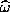
. In other words, the velocity field and velocity field deviation calculation is an approximation based on an approximation. As will be shown in §3.5, the approximation to the Biot-Savart integral is fourth order in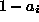
. Since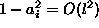
and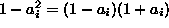
, the approximation to the velocity field and its derivatives converges with a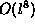
which far exceeds the overall spatial accuracy of the method.The total residual of a computational element under the dynamics of (3.12) is
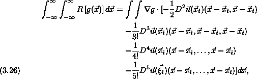
where
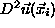
(the ``Hessian'') is a second order tensor or bilinear operator of velocity derivatives evaluated at the basis function center,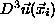
is a trilinear operator of velocity derivatives. For the last term in the expansion,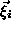
is a point on the line segment joining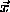
and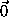
. From this point on, the tensors (including their constituents) are evaluated at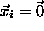
,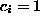
and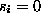
. Then,
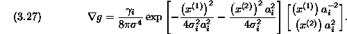
Here, it is convenient to use index notation so that
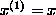
and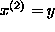
because we will have many repeated indices when analyzing the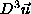
term of (3.26).In the first combination of terms in (3.26), one sees that
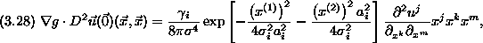
where one sums over repeated indices. Since the partial derivatives composing the Taylor coefficients are evaluated at the center of the basis function and therefore remain fixed, any combination of i, j, k will involve an odd moment on the elliptical Gaussian. Therefore,
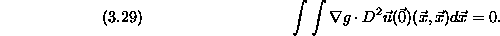
On the surface, it would appear that the second combination of terms has even moments and so will determine the rate of convergence for the whole method. I save this portion for last because it is contains a pleasant surprise in this respect. Similar to the first combination, the third combination in (3.26),
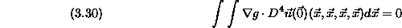
for the same reason. The last term actually determines the rate of convergence
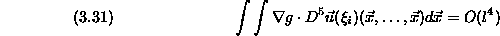
because
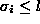
.Returning to the second combination, even moments are possible:
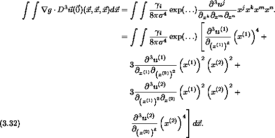
Applying incompressibility to the two middle expressions in the summation yields
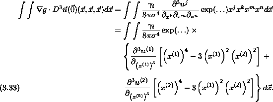
Evaluating the integral, one finds
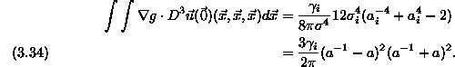
The magnitude of  is relevant as l varies because, presumably,
the problem size grows as one increases the resolution. In other words, l
is a measurement of the support of a basis function. If one decreases l,
presumably one is using more basis functions to represent a given
approximation of the vorticity field. Thus, one would expect
is relevant as l varies because, presumably,
the problem size grows as one increases the resolution. In other words, l
is a measurement of the support of a basis function. If one decreases l,
presumably one is using more basis functions to represent a given
approximation of the vorticity field. Thus, one would expect  to
scale as least like
to
scale as least like
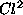
where C is the representative vorticity at some point in the domain. In fact, many investigators force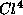
so that basis functions overlap more as the numerical parameters are refined. For example, Hald used this procedure for his first vortex method convergence proof because it balanced two distinct terms in one of his error bounds [10]. Since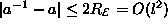
and if we make the reasonable restriction that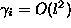
, we can see that the contribution from the third differential tensor is
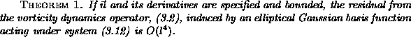
We have established in this section that deforming basis functions induce fourth order spatial errors over the entire domain. This error estimate using residuals is not restricted to a particular norm, so that even uniform error estimates are possible as they were for CCSVM. We have also eluded to the necessity of a refinement procedure that will be discussed in §4 so that basis functions will not spread beyond a specified width l.